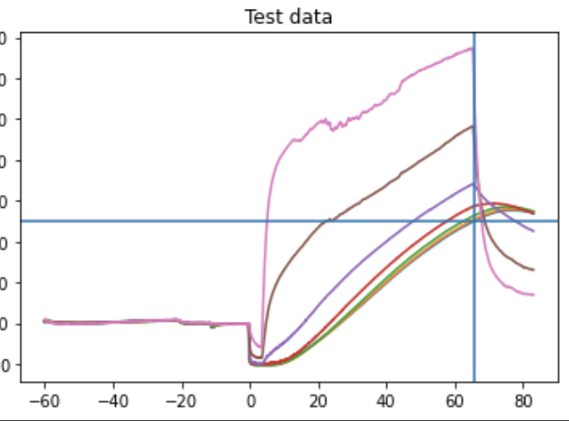

Food Heating Prediction
I worked hand in hand with the client to improve a prediction algorithm in order to be able to model food heating and estimate when it would reach a desired temperature. The algorithm would receive registered temperatures from 7 sensors inserted in the food every 5 seconds and update the model and estimated time.
Overview
With the use of different mathematical models, best fitting curves were used to predict heating time while receiving the data on live.
Exponential, quadratic and linear models are used in every fixed-length window together with a validation window to decide which model fits the data best and use it to inform the user. These information would be shown in the product but for the scope of my project I ran and displayed everything on the screen using Google Colab.
The user handed me some experiments with all the information from the sensors to use them to test and compare different algorithms.
Backend
Python
Frameworks & Libraries
Google Colab, matplotlib, numpy, pandas, sklearn, unittest
